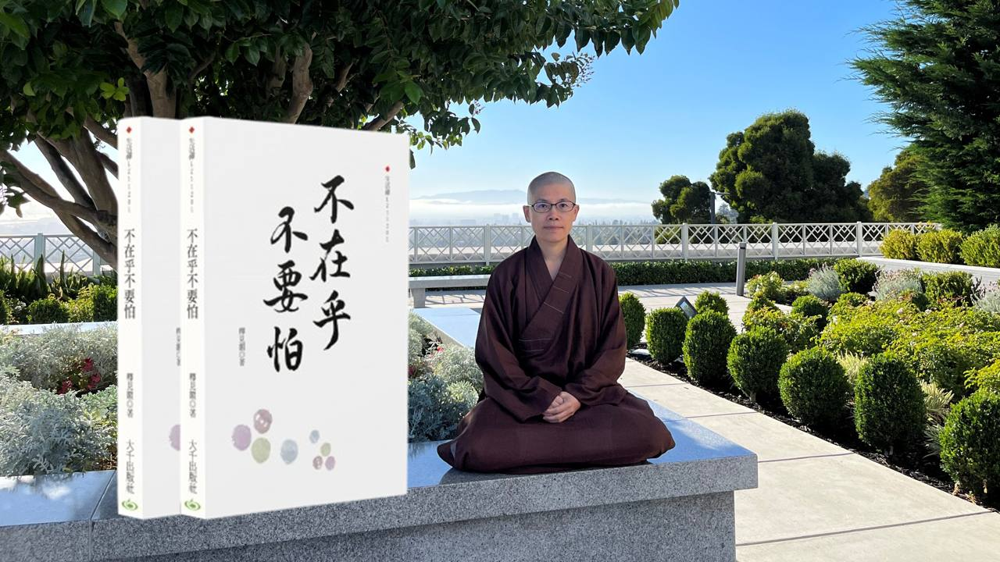
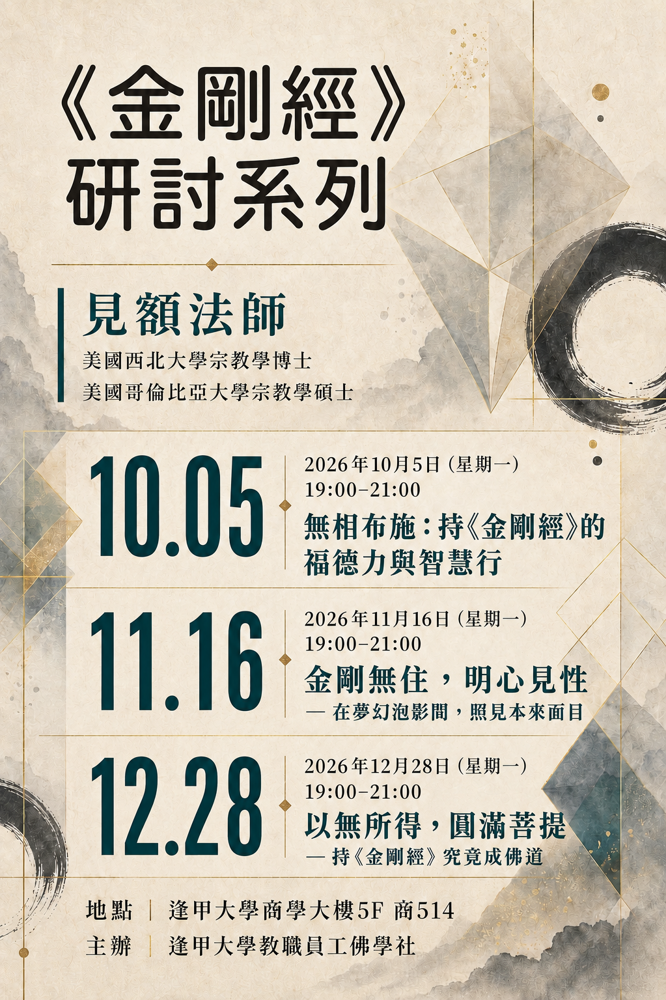
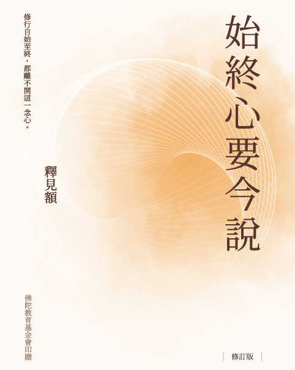
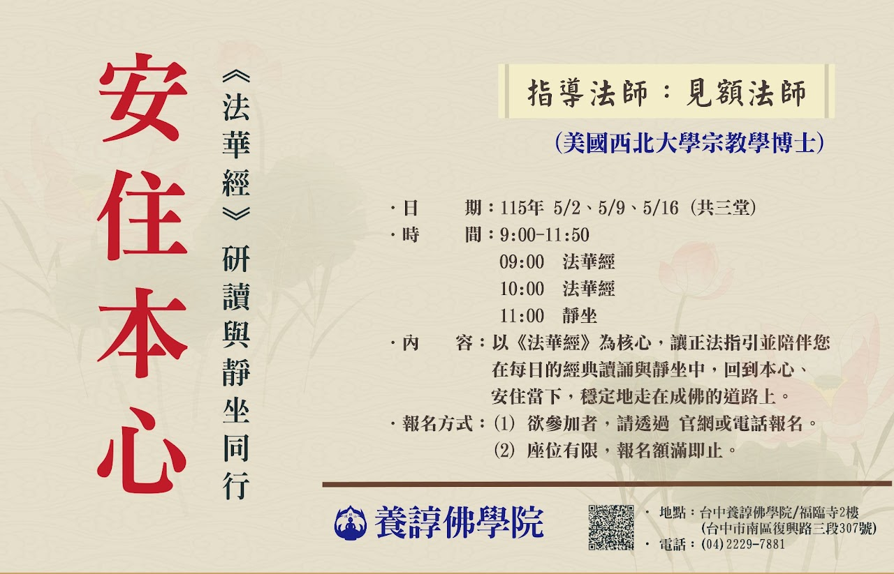
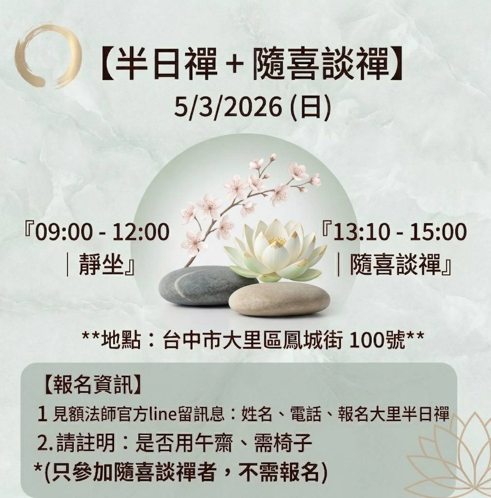

這是新版預覽（高度／深度／廣度改版），原版仍在 index.html，確認沒問題後再取代。｜對應影片：Gary Chen 講 Felix Rieseberg「更有野心的 AI 用法」：速度、高度、深度、廣度。
見額法師｜殊曼讀心 shifu-shuman.org
不在乎，不要怕。
給焦慮時代一個安頓身心的地方。
弘法・禪修・天台教觀。第一次來？花 3 分鐘，找到適合你的第一步。
第一次來？三步找到你的入口





殊曼讀心

見額法師《不在乎不要怕》已譯成英文版
Free from Attachment, Free from Fear
Kindle 電子書 (USD 5.99) 可在 Amazon 上訂購
若欲購買平裝書 (NTD 250元)，請於 LINE 官方帳號上留言。
始終心要今說（修訂版）

• 修訂版簡介：針對初版的錯漏字已修正，重新排版，加大行距和天地，紙質更薄、重量更輕，便於閱讀。書末新增「索引」，便利讀者查找相關資料，猶如天台學的工具書。
• 內容簡介：本書為唐朝天台宗湛然大師的著作〈始終心要〉之註釋，以詮釋天台教理（如三諦）為主軸，輔以觀行（三觀）修習。透過此書，能一窺天台教觀堂奧。